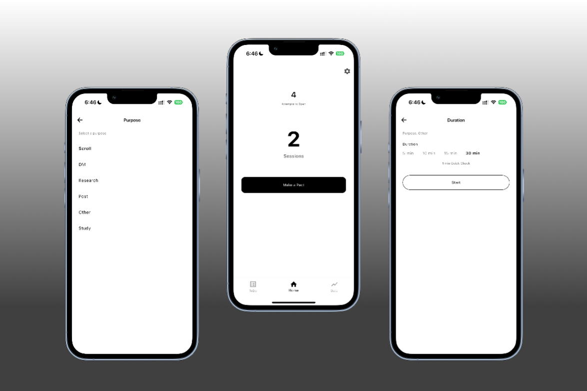

You don’t mean to open it. But you do.
You’re not alone. FocusPact stops you before you drift.
Apply for early access
You open social media. But you had something else to do.
So we show it to you. Your Todo list appears. You face what actually matters.
See how it stops you in 30 seconds.
Watch the flow before the feed can pull you in.
Actual product flow
Stop using it on autopilot. Start using it with intention.
FocusPact makes you pause. Then choose.
01
Say why you’re opening.
02
Choose how long you stay.
03
Then access begins.

Time limits don’t fix the problem.
Other apps
FocusPact
Just cut your time.
Limits how many times you open.
Don’t question your intent.
Makes you choose why.
Let the impulse happen.
Makes you choose how long.
Overcomplicated.
Simple by design.
No next step after blocking.
Brings you back to what matters.
If you actually want to change, this will feel different.
This is for people who are serious about changing. Stop wasting time. Choose control before regret. Get out of autopilot. Build real consistency. Do what actually matters.
Apply for early access